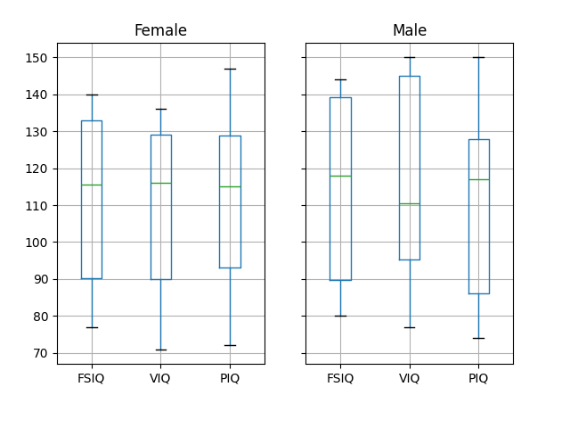
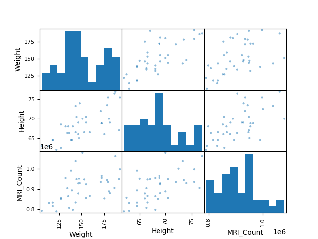

Note
Go to the end to download the full example code
3.1.6.2. Plotting simple quantities of a pandas dataframe¶
This example loads from a CSV file data with mixed numerical and categorical entries, and plots a few quantities, separately for females and males, thanks to the pandas integrated plotting tool (that uses matplotlib behind the scene).
See http://pandas.pydata.org/pandas-docs/stable/visualization.html
- 
- 

import pandas
data = pandas.read_csv("brain_size.csv", sep=";", na_values=".")
# Box plots of different columns for each gender
groupby_gender = data.groupby("Gender")
groupby_gender.boxplot(column=["FSIQ", "VIQ", "PIQ"])
from pandas import plotting
# Scatter matrices for different columns
plotting.scatter_matrix(data[["Weight", "Height", "MRI_Count"]])
plotting.scatter_matrix(data[["PIQ", "VIQ", "FSIQ"]])
import matplotlib.pyplot as plt
plt.show()
Total running time of the script: (0 minutes 0.573 seconds)